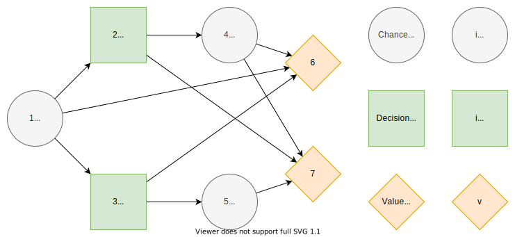

Decision Model
Introduction
The model is based on [1], sections 3 and 5. We highly recommend to read them for motivation, details, and proofs of the formulation explained here. The paper [2] explains details about influence diagrams.
Influence Diagram

We define the influence diagram as a directed, acyclic graph such that part of its nodes have a finite number of states associated with them
The set of nodes $N=C∪D∪V$ consists of chance nodes $C,$ decision nodes $D,$ and value nodes $V$. We index the nodes such that $C∪D=\{1,...,n\}$ and $V=\{n+1,...,n+|V|\}$ where $n=|C|+|D|.$ The set of arcs consists of pairs of nodes such that
The condition enforces that the graph is directed and acyclic, and there are no arcs from value nodes to other nodes.
Each chance and decision node $j∈C∪D$ is associates with a finite number of states $S_j.$ We use integers from one to number of states $|S_j|$ to encode individual states
We define the information set of node $j∈N$ to be its predecessor nodes
Practically, the information set is an edge list to reverse direction in the graph.
Paths
Paths in influence diagrams represent realizations of states for chance and decision nodes. Formally, a path is a sequence of states
where each state $s_i∈S_i$ for all chance and decision nodes $i∈C∪D.$
We define a subpath of $s$ is a subsequence
where $1≤i_1<i_2<...<i_k≤n$ and $k≤n.$
The information path of node $j∈N$ on path $s$ is a subpath defined as
Concatenation of two paths $s$ and $s^′$ is denoted $s;s^′.$
Sets
We define the set of all paths as a product set of all states
The set of information paths of node $j∈N$ is the product set of the states in its information set
We denote elements of the sets using notation $s_j∈S_j$, $s∈S$, and $s_{I(j)}∈S_{I(j)}.$
Probabilities
For each chance node $j∈C$, we denote the probability of state $s_j$ given information path $s_{I(j)}$ as
We define the upper bound of the path probability $s$ as
We use it as a constraint in the model formulation.
Decisions
For each decision node $j∈D,$ a local decision strategy maps an information path $s_{I(j)}$ to a state $s_j$
Decision strategy $Z$ contains one local decision strategy for each decision node. Set of all decision strategies is denoted $ℤ.$
Consequences
For each value node $j∈V$, we define the consequence given information path $s_{I(j)}$ as
where $ℂ$ is the set of consequences. In the code, the consequences are implicit, and we map information paths directly to the utility values.
Utilities
The utility function maps consequences to real-valued utilities
The utility of a path is defined as the sum of utilities for consequences of value nodes $j∈V$ with information paths $I(j)$
Model Formulation
The mixed-integer linear program maximizes the expected utility (1) over all decision strategies as follows.
Subject to
Decision variables $z$ are binary variables (2) that model different decision strategies. The condition (3) limits decisions $s_j$ to one per information path $s_{I(j)}.$ Decision strategy $Z_j(s_I(j))=s_j$ is equivalent to $z(s_j∣s_{I(j)})=1.$
We denote the probability distribution of paths using $π.$ The path probability $π(s)$ is between zero and the upper bound of the path probability (4). The path probability is zero on paths where at least one decision variable is zero (5) and equal to the upper bound on paths if all decision variables on the path are one (6).
We can omit the constraint (6) from the model if we use a positive utility function $U^+$ which is an affine transformation of utility function $U.$ As an example, we can normalize and add one to the original utility function.
There are also alternative objectives and ways to model risk. We discuss extensions to the model on the Extensions page.
Lazy Cuts
Probability sum cut
Number of active paths cut
Complexity
Number of paths
Probability stages
Number of probability stages
Decision stages
Number of decision stages
Utility stages
Number of utility stages
References
- 1Salo, A., Andelmin, J., & Oliveira, F. (2019). Decision Programming for Multi-Stage Optimization under Uncertainty, 1–35. Retrieved from http://arxiv.org/abs/1910.09196
- 2Bielza, C., Gómez, M., & Shenoy, P. P. (2011). A review of representation issues and modeling challenges with influence diagrams. Omega, 39(3), 227–241. https://doi.org/10.1016/j.omega.2010.07.003